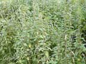
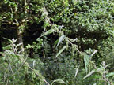
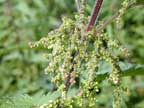

Perennial nettle
Urtica dioica
Other names
nettle, stinging nettle
Description
0.3 1.5m tall perennial plant (depending on situation), covered with stinging hairs. Leaves heart shaped, toothed and opposite 6 20cm long. Flowers green, in catkins. Very tough rhizomatous roots.
Similar plants
There are three naturalised and four native species of nettle in NZ. annual nettle and tree nettle are commonest.
Distribution
Locally common in cultivated ground especially in the Soth Island.
Toxin
Histamine, 5 hydroxytryptamine and acetylcholine in the sting. U. dioica has a more powerful sting than the annual nettle.
Species affected
All species may be affected.
Clinical signs acute
Pain and irritation. After massive exposure, tembling, vomiting, dyspnoea and weakness.
Clinical signs chronic
Post mortem signs
Very unlikelyto be fatal, although some dogs have died (in USA).
Diagnosis
History
Differential diagnosis
Other causes of dermatitis.
Treatment
None necessary self limiting.
Prognosis
Good.
Prevention
References
Conner H.E. The Poisonous Plants In New Zealand. 1992. GP Publications Ltd, Wellington
Cooper M R, Johnson A W. Poisonous Plants and Fungi in Britan: Animals and Human Poisoning. Her Majesty’s Stationary Office. London. 1998
Parton K, Bruere A.N. and Chambers J.P. Veterinary Clinical Toxicology, 2nd ed. 2001. Veterinary Continuing Education Publication No. 208
|  plant |
 |
|
|
|
 |
|
|
|
||
|
|
|
|